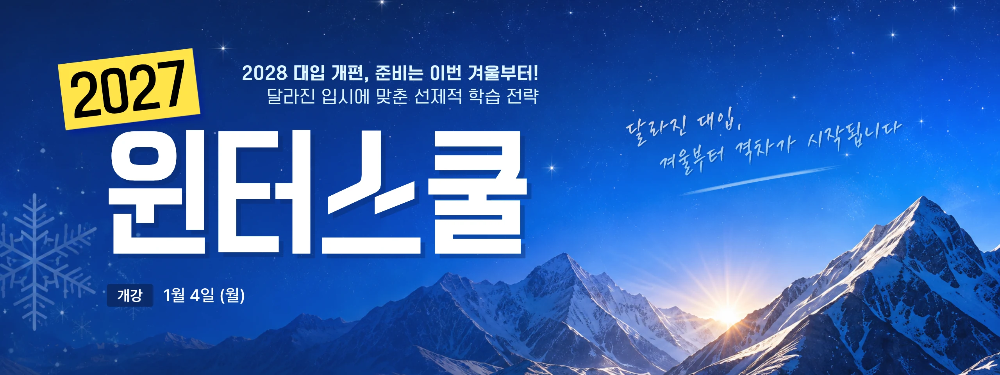

내신 5등급제 전면 적용
기존 9등급제 대비 1등급 범위 확대
상위 10%가 1등급!
같은 1등급 안에서 무엇으로
차이가 날까요?

기존 9등급제 대비 1등급 범위 확대
상위 10%가 1등급!
같은 1등급 안에서 무엇으로
차이가 날까요?
국어·수학 선택과목 폐지
사회·과학은 통합사회, 통합과학
모두 응시!
전 영역의 기본기가 중요해집니다.
과목 선택이 곧 입시 전략!
대학은 모집단위별 반영과목을
안내하고 있습니다.
미리 준비하는 학생만이 유리합니다.
! 입시의 규칙이 바뀌면, 준비의 순서도 바뀌어야 합니다.
학기 중에는 학교 수업과 내신에 쫓깁니다.
새 학년이 시작되기 전, 부족한 영역을 진단하고
다음 학년의 학습 흐름을 먼저 완성할 수 있는 시간은 겨울방학입니다.
국어·수학·영어핵심 기반 완성
통합사회·통합과학수능 기반 구축
내신 5등급제 대비학업관리 프로그램
학년·계열·목표대학별학습 로드맵 설계
선택과목 없는 국어·수학,
통합사회·통합과학까지
더 이상 시행착오를
미룰 시간이 없습니다.
학교 공부만 따라가는 고2가 아니라
수능 기반까지 함께 만드는
고2로 준비해야 합니다.
5등급제 첫 성적표가 나오기 전에
고등 학습의 기준부터
세워야 합니다.
2027 윈터스쿨에서 새로운 입시의 첫걸음을 함께하세요.